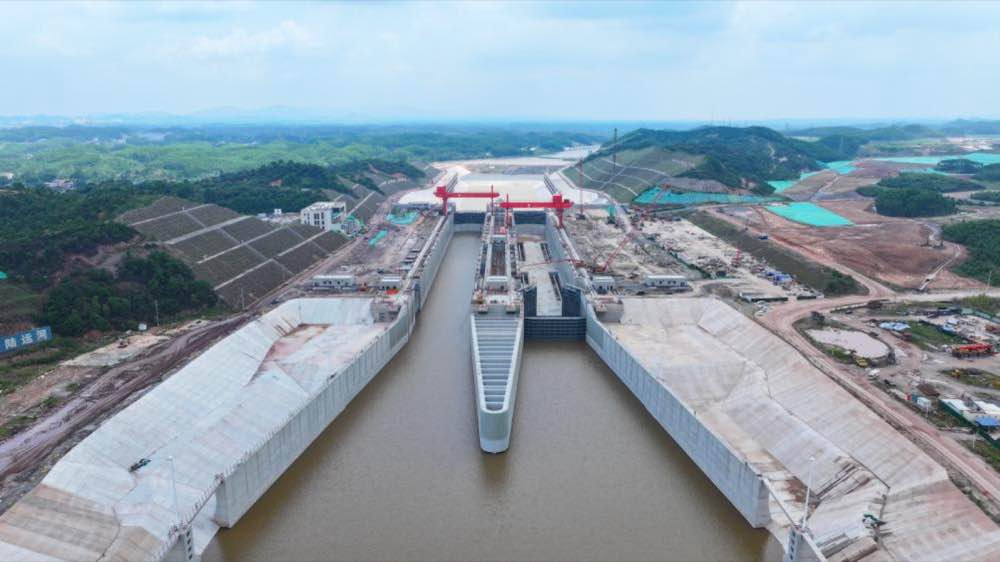
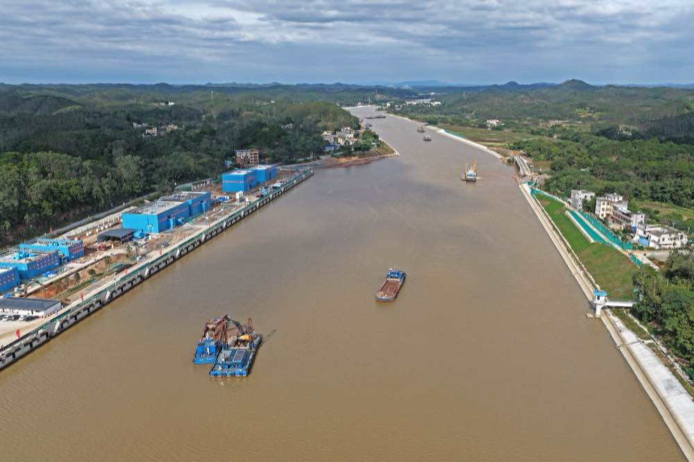
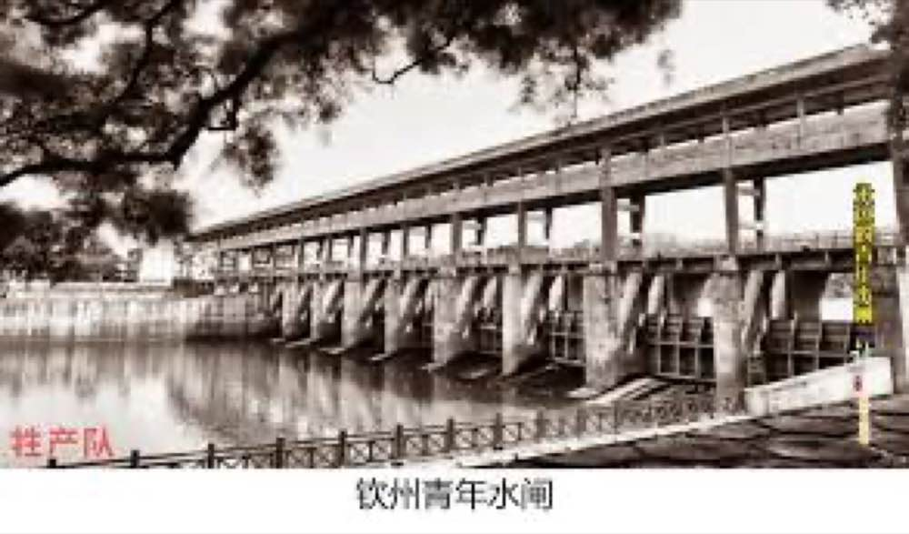
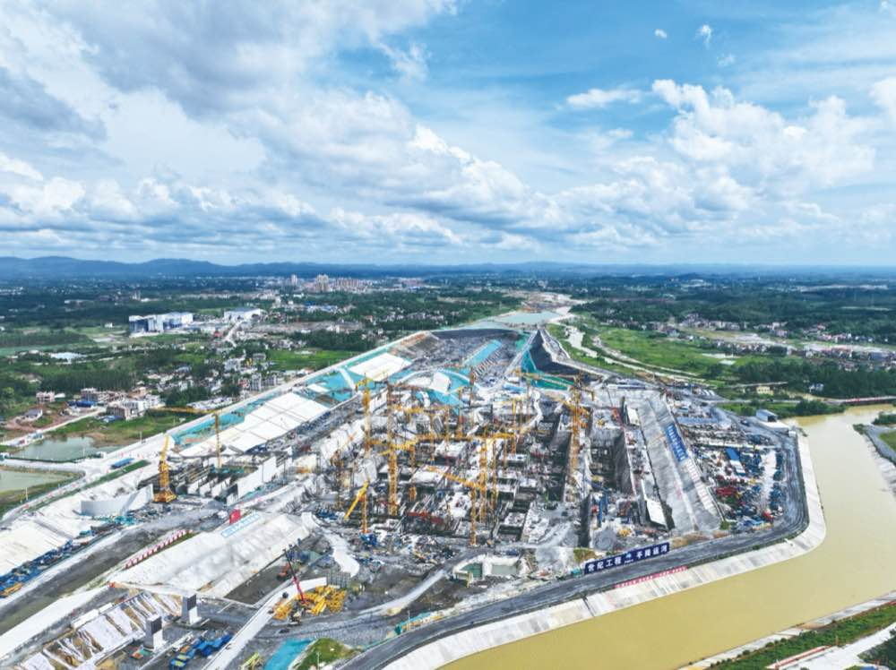
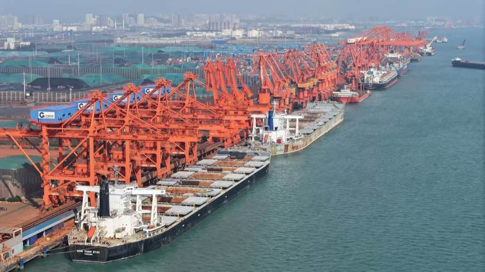
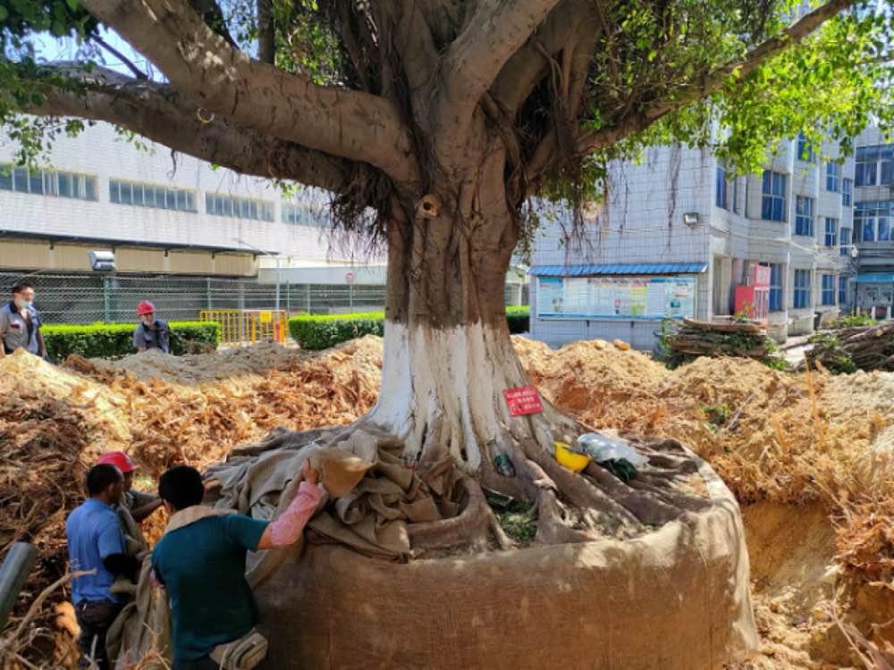
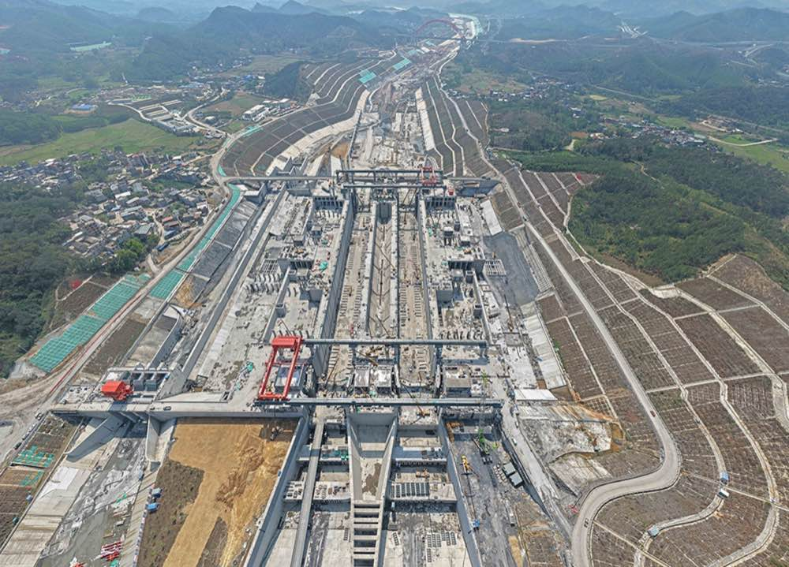

壹 卷 首 · 家 国 长 卷
平陆运河
从百年夙愿到世界级工程奇迹
平陆运河的前世今生
平陆运河是连通西江干流与北部湾港的江海联运战略通道，全长约 134 公里，按内河 I 级航道标准建设，可通航 5000 吨级船舶，建成后将成为广西乃至西南地区最便捷的出海新通道。
今生：世纪工程，全面开工
正式启动
2022 年 8 月正式开工建设，是新中国成立以来建设的第一条江海连通大运河，也是西部陆海新通道的骨干工程。
建设进展
马道、企石、青年三大枢纽同步推进，截至当前已累计完成投资过半，预计2026 年底主体建成、具备通航条件。
战略意义
建成后西南地区货物经平陆运河出海较现行东向通道缩短航程约 560 公里，显著降低物流成本，重塑区域经济地理格局。
前
前世：百年构想，几经搁置
早期设想
自孙中山《建国方略》提出打通珠江与北部湾的构想起，历经民国勘测与建国后多次论证，因工程规模、资金与技术条件限制，长期停留在规划层面。
反复酝酿
20 世纪 90 年代至 21 世纪初，广西多次推动立项研究，但受制于生态影响评估、水资源调配争议及投资效益论证，始终未能进入实施阶段。
素材导览
三大维度 · 展卷读画见运河
壹
硬核
工程
世界之最与首创技术
贰
历史
脉络
百年构想与梦圆今朝
叁
温柔
人文
生态呵护与以人为本
硬核：工程奇迹
与世界纪录
01
超级工程 · 世界之最
超级工程创四项世界之最
全长
134.2 公里
概算总投资
727.19 亿元
可用作文主题
奋斗
国力
世界之最 | 具体内容 |
通航能力最强 | 内河Ⅰ级航道，可通航 5000 吨级船舶 |
省水船闸落差最高 | 马道枢纽最大水位差 29.6 米，约 10 层楼高 |
内河省水船闸规模最大 | 闸室长 300 米、宽 34 米，双线可同过 12 艘 5000 吨级船 |
阀门启闭速度最快 | 70 吨阀门开门 1 分钟、关门 30 秒，为常规船闸 2-4 倍 |
平陆运河 · 语文作文素材

运河价值
运河打通江海直连通道
可用作文主题
开放
交流
合作
壹
地理困局
西江水系奔流向东，北部湾近在咫尺却无纵向通道，西南货物只能东绕珠江口出海，多走
560 公里以上。
贰
历史性牵手
平陆运河通航后，西江与北部湾实现江海直连，开辟西南地区运距最短、最经济、最便捷
的出海通道。
叁
功能边界
新中国成立后新建运河多承担内河连通、区域航运、引调水等功能；平陆运河兼具国内内线运输与国际远洋外贸双重功能。
「平陆运河拓展了中国现代运河的功能边界。」—— 清华大学人文学院副院长 倪玉平
平陆运河 · 语文作文素材

工程首创
首创省水技术节水超六成
世界首创
马道、企石枢纽采用三级叠合式省水船闸，省水率超
60%
原理
船舶下行时闸室水存入省水池，上行时回灌闸室，循环利用
布局
高、中、低三级储水池呈阶梯形叠合，低位池藏于地下，形成「品」字形
青年枢纽
双线互灌互泄式，省水率约 50%
可用作文主题
创新
突破常规
三大枢纽合计年节水量超 10 亿立方米，相当于约 70 个西湖蓄水量；运河用水量仅为西江下游的 1.8%
「水下森林」：马道枢纽 1302 根、企石枢纽 1152 根钢筋混凝土立柱，可承载约 14 万吨水压
平陆运河 · 语文作文素材
历史：百年构想与代际接力
从1919到2026，跨越百年的接力
02
百年历程
百年构想跨越世纪终梦圆
上世纪五十年代 · 青年水闸建设历史影像
作文主题
时间跨度 · 理性传承 · 国家发展
平陆运河 · 语文作文素材
起点
1919 年，孙中山在《建国方略》中提出连通西江与北部湾的构想。
踏勘
1951 年两广联合勘察队首次踏勘分水岭；1959 年7000 多名青年建成「青年水闸」。
论证
1975、1979 年两次勘察，结论为「技术上可行，不宜上马」。
转机
2008 年纳入全国内河航道规划，2019 年随西部陆海新通道上升为国家战略。
梦圆
2022 年 8 月开工，2026 年 9 月建成通航。

素材维度 · 攻坚历程
两万建设者攻克六十五米落差
平陆运河建设者施工场景
1979 年
规划报告结论「技术上可行，不宜上马」——受制于当时的技术与经济条件。
此后
经科学论证与专家评审，通航标准定为 5000 吨级。
1400 多个日夜
两万多名各族建设者协同奋战，攻克 65 米高落差，完成 4 处取直改造，并以数字化技术整合优化全线。
可用作文主题
代际接力
工匠精神
克服万难
平陆运河 · 语文作文素材

经济带动 · 数据素材
运河年带动千亿级经济增长
投资拉动
工程投资预计直接带动 GDP 增长约 1800 亿元 ，建设期创造就业岗位
42 万多个 。
物流提速
西南货物出海时间从 12—15 天 压缩至 5—7 天 ，综合物流成本降低
18%—30% ，预计每年节约运输费用超 50 亿元 。
体系升级
运河衔接西南铁路网与北部湾港口群，构建江海铁一体的综合交通运输体系。
可用作文主题
战略布局
大国担当
平陆运河 · 语文作文素材

温柔：生态呵护与以人为本
一条有温度的运河
03
素材维度 · 人文温度
三十六株古树与村民同迁同住
壹
原方案
古树移植至园博园，村民不舍。
贰
最终选择
古树与村民同迁同住，搬入新建安置点。
36株
全线古树实行「一树一策」保护
2764户 · 11228 名
搬迁安置群众
104座 · 76.8 公里
新改建便民桥 · 建成惠民路
可用作文主题：生态保护、人与自然和谐

生态之卷 · 弃土新生
三亿方弃土综合利用率超九成八
3.15 亿立方米
土石方开挖量
体量之大，可填满 20 个杭州西湖。
过去 堆存外运，水土流失与安全隐患并存
现在 填造地、工程利用、区域回填等 7 种方式，综合利用率 超 98%
壹
丘陵填平，表土剥离与微生物改良，新增近万亩耕地
贰
水土保持生态产品 10 年承包经营完成交易，弃土变成集体收入
可用作文主题
绿色循环 · 可持续发展
平陆运河 · 语文作文素材

感谢观看
平陆运河不仅是一条水道——它是百年家国夙愿的接力，是工程卓越的见证，更是生态温柔的典范。
从1919年《建国方略》的构想到2026年建成通航，平陆运河凝聚了奋斗、创新与人与自然和谐共生的精神。